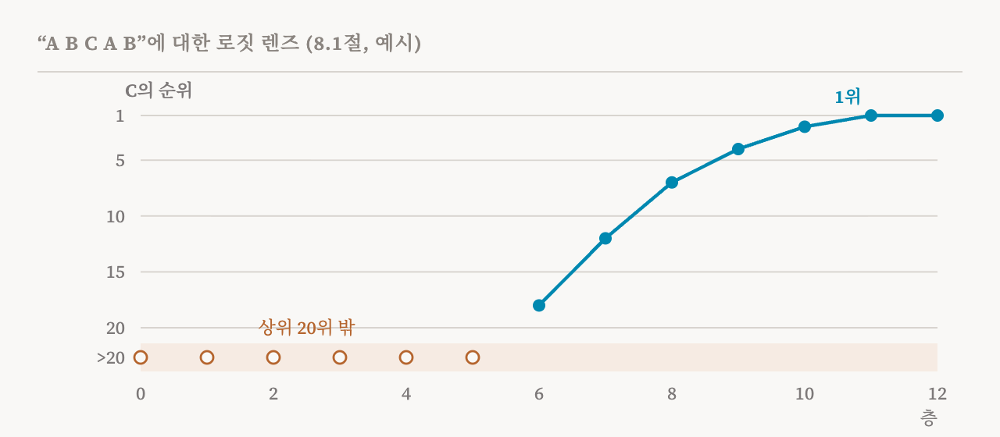
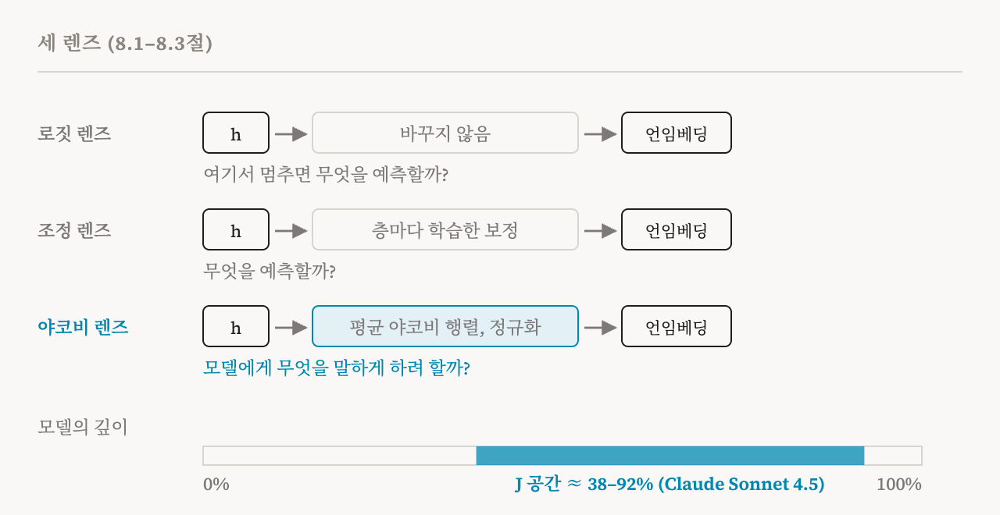

앞의 두 부는 활성값을 부분들로 쪼갰습니다. 10편부터 15편까지는 특징으로, 16편부터 20편까지는 상호작용하는 특징들의 회로로 쪼갰습니다. 이번 부는 보완적인 접근을 다룹니다. 활성값을 통째로 다루며, 그 안에 어떤 정보가 들어 있는지, 흔히 자연어로 옮겨서 묻습니다. 이 책은 8장에서 이를 소개하고, 이번 편은 그 장의 첫머리와 8.1–8.3절(66–69쪽)을 다룹니다. 중간층을 모델 자신의 어휘로 풀어 읽는 세 렌즈입니다.
이 책은 이 방법들이 하는 일과 하지 않는 일을 강조합니다. 이 방법들은 활성값에 개입하지도, 활성값을 분해하지도 않습니다. 활성값과 단어 사이에 직접적인 창구를 열어 주므로 특히 접근하기 쉽습니다. 그것이 강점이고, 곧 보겠지만 주된 한계의 원인이기도 합니다.
로짓 렌즈
4편은 트랜스포머의 마지막 단계를 설명했습니다. 마지막 잔차 스트림을 어휘의 모든 토큰에 대한 점수로 바꾸는 언임베딩입니다. 2020년에 nostalgebraist라는 필명을 쓰는 연구자가 제안한 로짓 렌즈(logit lens)는 간단한 질문을 던집니다. 같은 언임베딩을 더 앞쪽 층의 잔차 스트림에 적용하면 어떻게 될까? 그 결과는 계산이 거기서 멈췄다면 모델이 무엇을 예측했을지를 보여 줍니다. 층마다 적용하면 예측이 모델의 깊이를 따라 어떻게 만들어지고, 모델이 언제 답을 정하는지 추적할 수 있습니다.
이 책은 일반적인 경향을 전합니다. 앞쪽 층은 퍼진 예측을 내는 경향이 있고, 뒤쪽 층으로 갈수록 마지막 출력 쪽으로 점점 좁혀집니다. 물론 예외도 있습니다. 이 책의 예는 19편의 유도 과제로 돌아갑니다. A B C A B를 읽는 12층 모델에서, 로짓 렌즈는 정답 C가 6층에서 상위 20개 후보에 들어오고, 점점 강해져서, 마지막 층에서 1위가 되는 모습을 보여 줄 수 있습니다. 하지만 더 어려운 언어 패턴에서는 앞쪽과 가운데 층이 많은 토큰에 고르게 퍼진 분포를 보이다가, 마지막 몇 층에서야 모델이 예측을 정할 수도 있습니다.

이 책의 실습 노트북은 GPT-2에 로짓 렌즈를 적용해서, 층마다 상위 토큰, 최종 답의 순위가 바뀌는 모습, 각 층의 예측이 마지막 예측에 얼마나 빨리 수렴하는지를 보여 줍니다.
로짓 렌즈의 두 한계
이 책은 기본 로짓 렌즈의 한계를 두 가지 듭니다. 첫째는 형식이 맞지 않는 문제입니다. 중간층에 언임베딩을 적용한다는 것은, 그 층의 활성값이 이미 출력층이 기대하는 형태로 되어 있다고 가정하는 것입니다. 하지만 중간 표현은 아주 다르게 짜여 있을 수 있습니다. 6층을 출력층의 눈으로 읽으면 관련 정보를 뽑아낼 수는 있지만, 6층에서 모델이 무엇을 계산하는지 정확히 보여 줄 수는 없습니다.
둘째는 더 근본적입니다. 로짓 렌즈는 인과적이지 않고 상관적입니다. 활성값을 어휘 공간에 사영할 뿐, 풀어낸 토큰들이 계산에서 어떤 역할을 하는지 시험하지 않습니다. 형식이 맞지 않는 문제 때문에, 풀어낸 토큰은 기껏해야 활성값에서 되찾을 수 있는 정보를 보여 줄 뿐, 모델이 쓰는 정보를 보여 주지는 않습니다. 이 연재 내내 이어지는 '있다'와 '쓰인다'의 구별이 여기서도 나옵니다.
조정 렌즈
노라 벨로즈(Nora Belrose)와 동료들이 내놓은 조정 렌즈(tuned lens)는 첫째 한계를 다룹니다. 층마다 작은 아핀 변환, 곧 행렬 하나와 오프셋 하나를 학습해서, 언임베딩을 적용하기 전에 그 층의 활성값을 출력층의 형식으로 옮깁니다. 이 변환은 각 층에서 풀어낸 예측이 모델의 마지막 예측과 최대한 맞도록 학습됩니다. 그 결과 기본 로짓 렌즈보다 각 층에서 정보를 더 효과적으로 뽑아냅니다.
하지만 이 책은 조정 렌즈가 로짓 렌즈의 더 깊은 한계를 물려받고, 자기 한계도 하나 더한다고 지적합니다. 여전히 상관적입니다. 여전히 모델이 내부에서 무엇을 계산하는지가 아니라 무엇을 예측할 것 같은지에 답하도록 설계되어 있습니다. 그리고 마지막 출력에 맞추도록 학습되기 때문에, 그 보정이 중간 단계를 가리고, 너무 이른 층에서 최종 답과 비슷해 보이는 예측을 낼 수 있습니다. 2026년의 한 연구는 조정 렌즈가 로짓 렌즈보다 중간 계산을 훨씬 더 공격적으로 건너뛴다는 것을 발견했습니다. 이 렌즈의 노트북은 GPT-2 Large에서 두 렌즈를 비교합니다.
야코비 렌즈
Anthropic의 2026년 연구에서 나온 야코비 렌즈(Jacobian lens, J-lens)는 다른 접근을 택합니다. 중간층이 무엇을 예측할지 묻는 대신, 그 층의 활성값이 모델이 결국 하는 말에 어떤 영향을 줄지 묻습니다.
도구는 17편에서 만난 야코비 행렬, 곧 한 곳의 작은 변화가 다른 곳의 값을 얼마나 바꾸는지 적은 표입니다. 어떤 층과 위치에서 잔차 스트림이 바뀌면, 그 변화는 그 위치와 그 뒤 모든 위치의 마지막 층으로 퍼져 나갑니다. J-lens는 이렇게 퍼져 나가는 야코비 행렬을 많은 프롬프트와 위치에 걸쳐 평균해서, 층마다 렌즈 행렬 하나를 만듭니다. 활성값을 풀어 읽을 때는 먼저 이 행렬을 곱해서 모델의 끝까지 밀어 보내는 것처럼 하고, 정규화한 뒤 언임베딩을 적용합니다.

여기서 두 가지가 따라 나옵니다. 첫째, J-lens는 모델이 다음에 무엇을 예측할지에 그치지 않고, 모델이 내부에서 무엇을 계산하는지에 답하려 합니다. 이 연구는 J-lens가 여러 단계의 추론, 겉으로 나오지 않는 계획, 그 밖의 긴 계산이 필요한 과제를 분석하는 데 쓸모 있다는 것을 발견했습니다. 둘째, 개입의 도구가 됩니다. 이 연구는 층마다 토큰마다 J-lens 벡터를 정의했는데, 활성값이 J-lens 벡터와 얼마나 나란한지가 그 활성값이 모델을 그 토큰 쪽으로 얼마나 강하게 미는지를 잽니다. 그러면 이 벡터를 조종 벡터로 써서 모델을 어떤 개념 쪽으로 밀거나 멀어지게 할 수 있습니다. 반면 로짓 렌즈와 조정 렌즈는 풀어 읽는 도구여서 개입에는 거의 쓸모가 없습니다.
야코비 렌즈의 한계
이 책은 J-lens의 한계도 두 가지 듭니다. 여전히 토큰 하나 수준에서 작동하는데, 많은 개념은 여러 토큰에 걸쳐 있습니다. "photoperiodism" 같은 단어가 여러 하위 단어 토큰으로 쪼개지고 렌즈에 "photo"만 보인다면, 그 개념이 광주기성인지 photo로 시작하는 다른 단어인지 알 수 없습니다.
그리고 J-lens는 일정한 범위의 층에서만 잘 작동하는데, 연구는 이를 J 공간(J-space)이라고 불렀습니다. Claude Sonnet 4.5에서는 모델 깊이의 약 38%에서 92% 사이에서 풀어낸 개념이 가장 많은 것을 알려 주었습니다. 그보다 앞에서는 잡음이 많아 읽기 어렵습니다. 그보다 뒤에서는 모델의 출력 쪽으로 무너져서 알려 주는 것이 적습니다. 최근의 몇몇 연구가 이런 한계를 해결하려 했습니다. 이 책의 실습 노트북은 미리 맞춰 둔 J-lens를 Qwen 모델에 적용하고 로짓 렌즈와 비교합니다.
이 사이트는 J-lens 연구를 두 번 자세히 읽었습니다. J 공간이 무엇을 뜻할 수 있는지 다룬 「AI의 전역 작업 공간 이론」, 그리고 이 렌즈를 나중에 고친 연구를 다룬 「렌즈를 닦으면 보이는 것」입니다.
세 렌즈, 세 질문
| 렌즈 | 중간층 활성값에 하는 일 | 답하는 질문 | 주된 한계 |
|---|---|---|---|
| 로짓 렌즈 | 언임베딩을 곧장 적용 | 여기서 멈추면 모델은 무엇을 예측할까? | 중간층이 출력의 형식을 쓴다고 가정함. 상관적 |
| 조정 렌즈 | 층마다 학습한 보정을 적용한 뒤 언임베딩 | 모델은 무엇을 예측할까? | 상관적. 중간 단계를 가릴 수 있음 |
| 야코비 렌즈 | 평균 야코비 행렬로 활성값을 앞으로 밀어 보낸 뒤 언임베딩 | 이 활성값은 모델에게 무엇을 말하게 하려는 경향이 있을까? | 토큰 수준에 머묾. 가운데 층에서만 많은 것을 알려 줌 |
| 용어 | 뜻 |
|---|---|
| 중간 표현 | 모델의 가운데 층에 있는 활성값 |
| 렌즈 | 중간 표현을 모델의 출력 어휘로 옮기는 방법 |
| 로짓 렌즈 | 모델의 언임베딩을 중간층의 잔차 스트림에 곧장 적용하는 것 |
| 로짓 | 확률로 바뀌기 전에 모델이 모든 토큰에 매기는 날것의 점수 |
| 표현의 불일치 | 중간층이 출력층과 다른 방식으로 정보를 짜는 것 |
| 조정 렌즈 | 층마다 학습한 보정을 더한 로짓 렌즈 |
| 아핀 변환 | 행렬 곱셈에 오프셋을 더한 것 |
| 야코비 렌즈(J-lens) | 활성값이 모델의 마지막 출력에 어떤 영향을 줄지 풀어 읽는 렌즈 |
| J-lens 벡터 | 활성값과 얼마나 나란한지가, 그 활성값이 모델을 어떤 토큰 쪽으로 얼마나 미는지를 말해 주는 방향 |
| J 공간 | J-lens가 가장 많은 것을 알려 주는 가운데 층의 범위 |
22편에서는 모델 자신에게 활성값을 설명하게 합니다. 패치스코프, LatentQA, 활성 오라클입니다.